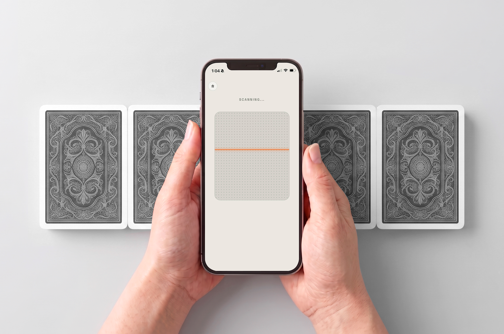
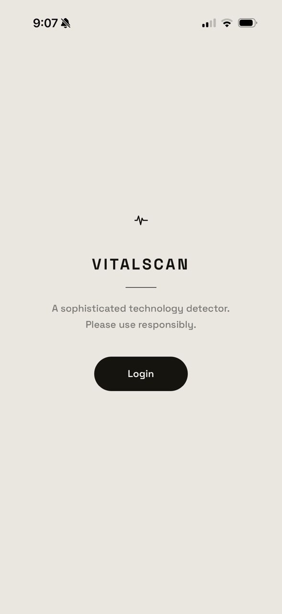
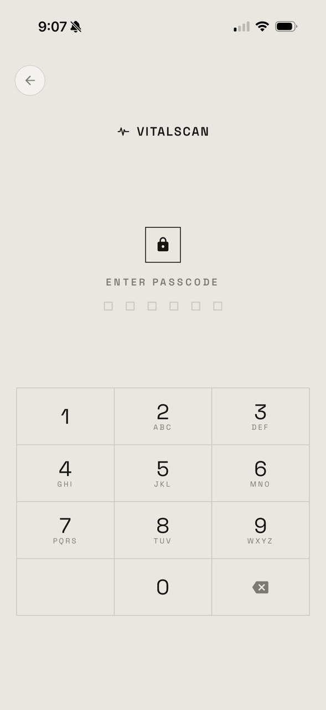
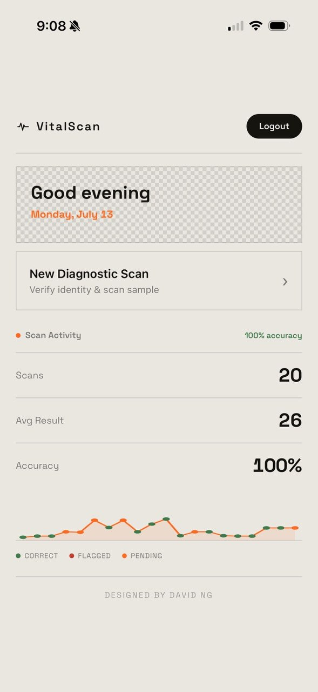

VitalScan: A Scanning Interface for ACAAN
VitalScan is a mobile web app built for magicians who perform ACAAN, Any Card at Any Number, a routine already established in professional close up and stage magic. In the routine, a spectator names a card and a number, and that card is found to be at exactly that position in the deck.
Every screen on this page belongs to a fully functioning web app, not a static mockup or a motion study. The passcode, the scan states, and the result reveal are all real, working interactions, running exactly as shown.

A technology layer for an already proven routine
ACAAN is one of the most recognized routines in professional magic: a spectator names any card and any number, and that card is found waiting at exactly that position. VitalScan gives performers a considered piece of technology to carry that moment, styled like a real piece of confidential hardware and built to sit naturally alongside the deck rather than draw attention to itself.
What the audience sees
A spectator works through several piles cut from the deck. VitalScan appears to scan each pile for the named card, and once it registers a result, reports how many cards down from the top of that pile the card sits. To an audience, the app appears to be doing all of the work, which is exactly the impression it is designed to give.

An interface built around the performer
VitalScan gives the routine a technology layer. As a spectator works through several piles cut from the deck, VitalScan appears to scan each pile for the named card and, once it registers a result, calculates how many cards down from the top of that pile it sits. On the surface, the app appears to be doing all of the work, reading as considerably more advanced technology than it needs to be. In practice, VitalScan is an interface built around the performer's own skill, designed to support that skill rather than replace it.
A user journey, translated one screen at a time
The build was directed by a specific flow a performer moves through mid routine: log into the discreet app, have the spectator hold their thumb to the "fingerprint scanner," then work the phone across several piles cut from the deck until a match is found and its position from the top is revealed. That flow, more than any individual screen, was the thing every round of design direction was measured against.



Wireframes for each of those moments started in Figma, mapping out the core screens and flow before any visual language was attached. Those wireframes were then refined in Claude Design, sharpening layout and hierarchy ahead of visual direction.
What changed, round by round
A selection of the iterations that shaped VitalScan's feedback and reveal moments.
A passcode that responds as you type
Each digit fills its own dot in the passcode indicator as it is entered, giving immediate confirmation that a tap registered. If the six digit code does not match, the dots flash red across the full row before clearing back to empty, an unmistakable signal that reads at a glance rather than requiring anyone to stop and read an error message.
From a uniform pulse to a directional sweep
- The entire dot grid pulses as one flat block, with no sense of direction or movement across the surface.
- Reads closer to a generic loading or buffering animation than an active scan.
- Gives no visual cue for where in the pile the "read" is actually happening.
Draft — Uniform Pulse
- A single line sweeps down the field on a loop, giving the scan a clear direction.
- Creates a sense of coverage, as though the field is being read edge to edge.
- Reads as a purposeful, technical scanning motion audiences already recognize.
Final Design — Directional Sweep
The final design was chosen because it turns "scanning" into something that visibly happens to the surface, not just a state label sitting above it. A moving line gives the eye something concrete to track, which reads as considerably more convincing than a flat pulse, without needing any accompanying text to explain what is happening.
Two outcomes, each built to read instantly
- The scan field blinks between red and neutral instead of settling on a single static color.
- Motion catches peripheral attention, so the result registers even if no one is looking directly at the screen the moment it happens.
- Borrows the "active alert" convention from real hardware, signaling a state meant to be retried rather than treated as final.
Not Detected — Blinking Red
- A successful scan turns the field green and opens a short calculating phase.
- The count slows as it approaches the real result instead of landing on it all at once, the same way a spinning wheel loses momentum before it stops.
- That slowing is what creates the anticipation: people instinctively start guessing where it will land during the slowest final stretch.
Detected — Count Up to Result
Both states are built around the same principle, a result should be felt rather than only labeled. Not Detected uses motion to hold attention on a state that is meant to be retried, while Detected uses a slowing count to give a successful read its own sense of weight and anticipation.
An interface built to disappear at the right moment
A performance utility only works if it never draws attention to itself at the moment that matters most. Much of the interaction design was built around that constraint: giving a performer ordinary, natural feeling actions that a spectator reads as simply operating the app, while leaving room for the performer's own handling of the cards to happen at the same time, unnoticed.
Every screen designed with intention
Because VitalScan is a technology layer on top of an existing piece of magic, not the trick itself, every screen had to read as considered, professional software rather than anything styled like a "magic" app. Layouts, type, and color were treated the same way a genuine diagnostic or utility tool would be: intuitive at a glance, confident rather than playful, and free of anything that would make a spectator pause and wonder why a scanning app looks the way it does.
Ordinary actions, carrying more than they show
Every input on VitalScan, the passcode entry, the hold to scan gesture, the tap that starts a new scan, was designed to look and feel like a normal piece of app interaction on its own. None of it needed to look secretive, because none of it needed to be hidden from view, only folded into a motion a spectator already expects a performer to make.
What this project actually demonstrates
Summary
VitalScan gives an already proven routine a considered piece of technology to perform behind, designed the same way any other project on this site was: through repeated rounds of direction and revision, checked against a real, running build rather than a static file. Twenty four rounds of iteration, including two full visual identity reworks, produced an app with its own visual language, its own sound design, and interaction details built specifically to support a live performance rather than a screen viewed in isolation.
What Comes Next
- A proper deployment behind a dedicated domain, so the app is easy to hand to a spectator or run from a performer's own phone during a real set.
- Device level haptics on the hold to scan interaction, where the platform supports it, to bring the physical and visual feedback closer together.
- Additional result presentation options, giving performers more than one way to reveal a result depending on the routine and the room.